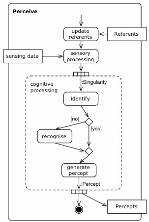

org.aslab.om.ecl.perception
Class ExplicitPerceptor
java.lang.Object
 org.aslab.om.ecl.perception.Perceptor
org.aslab.om.ecl.perception.ExplicitPerceptor
org.aslab.om.ecl.perception.Perceptor
org.aslab.om.ecl.perception.ExplicitPerceptor
- Direct Known Subclasses:
- ComponentsPerceptor
public abstract class ExplicitPerceptor
- extends Perceptor
Implementation of the Explicit Perceptor pattern
Activity diagram for the Explicit Perceptor pattern (realizes Ignacio's theory of perception)

- Author:
- chcorbato
| Methods inherited from class java.lang.Object |
clone, equals, finalize, getClass, hashCode, notify, notifyAll, toString, wait, wait, wait |
percepts
protected java.util.Set<Percept> percepts
referents
protected java.util.Set<Referent> referents
kbase
protected KnowledgeBase kbase
ExplicitPerceptor
public ExplicitPerceptor(Sensor s,
KnowledgeBase k)
perceive
public void perceive()
- Specified by:
perceive in class Perceptor
updateReferents
protected abstract void updateReferents()
configSensors
protected abstract void configSensors()
sensoryPerception
protected abstract java.util.Set<Singularity> sensoryPerception()
cognitivePerception
protected abstract void cognitivePerception(java.util.Set<Singularity> sensoryInput)
propioperception
protected abstract void propioperception()
identifyPercept
protected Percept identifyPercept(Singularity sing)
-
- Parameters:
sing -
- Returns: